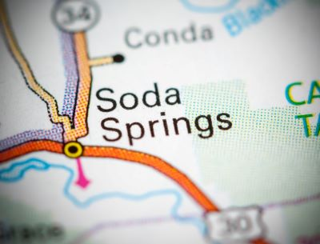

Soda Springs Idaho

Weather Summary
Currently:
Temperature: ° F
Wind Chill:
Humidity: %
Wind Speed: MPH
5-Day Forecast
Curiosity on the Oregon Trail
 Located along a shortcut on the Oregon-California
Trail off of the main route to Fort Hall, Idaho is Soda Springs. These natural bubbling pools of carbonated
water, caused by ancient volcanic activity, were first called “Beer Springs”. Visited by local Indians, fur
traders, and trappers prior to the days of the Oregon Trail emigrations, the springs were rightfully considered
to be one of the marvels of the overland trails.
Located along a shortcut on the Oregon-California
Trail off of the main route to Fort Hall, Idaho is Soda Springs. These natural bubbling pools of carbonated
water, caused by ancient volcanic activity, were first called “Beer Springs”. Visited by local Indians, fur
traders, and trappers prior to the days of the Oregon Trail emigrations, the springs were rightfully considered
to be one of the marvels of the overland trails.
At the time that pioneers were headed west for California and Oregon, there was an abundance of springs and
water in the area and the area became known as the “Oregon Trail Oasis.”
Continue Reading Story Here

My Weather Report Today
9 W 2nd S
Soda Springs, ID 83276
☎ 555.555.5555
✉ myweatherreport@gmail.com